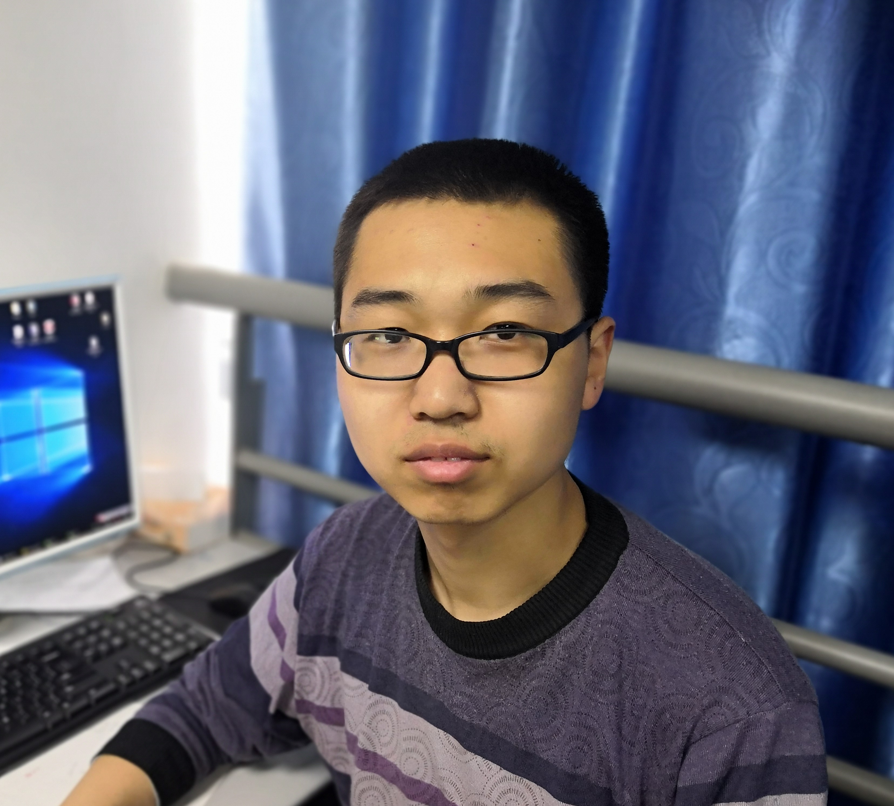
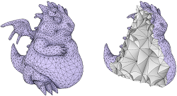
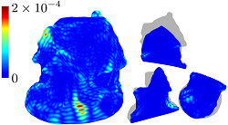
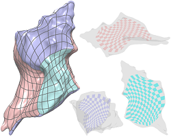

|  |
Hao Liu （刘浩）
|
|

|
Error-bounded Edge-based Remeshing of High-order Tetrahedral Meshes
Zhong-Yuan Liu, Jian-Ping Su, Hao Liu, Chunyang Ye, Ligang Liu, Xiao-Ming Fu Computer-Aided Design (SPM), 2021. [DOI]. |
|

|
Computing Planar and Volumetric B-Spline Parameterizations for IGA by Robust Mapping Fitting
Guan-Jie Yuan, Hao Liu, Jian-Ping Su, Xiao-Ming Fu Computer-Aided Geometric Design (GMP), 2021. [Code and Data]. [Video]. [DOI]. |
|

|
Simultaneous Interior and Boundary Optimization of Volumetric Domain Parameterizations for IGA
Hao Liu, Yang Yang, Yuan Liu, Xiao-Ming Fu , Computer-Aided Geometric Design (GMP), 2020. [Code: 3D, 2D]. [Data: 3D, 2D]. [Viewer: 3D, 2D]. [Supp]. [DOI]. |

|
Computational Peeling Art Design
Hao Liu*, Xiao-Teng Zhang*, Xiao-Ming Fu, Zhi-Chao Dong, Ligang Liu (*Joint first authors) ACM Transactions on Graphics (SIGGRAPH), 38(4), 2019 [Project page] |